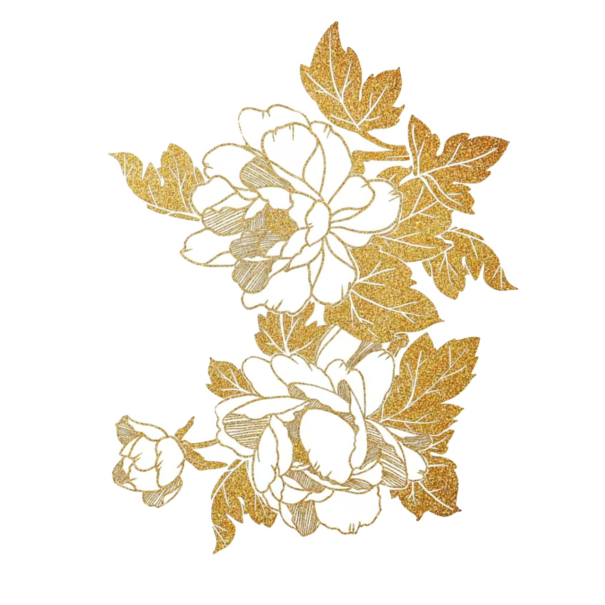
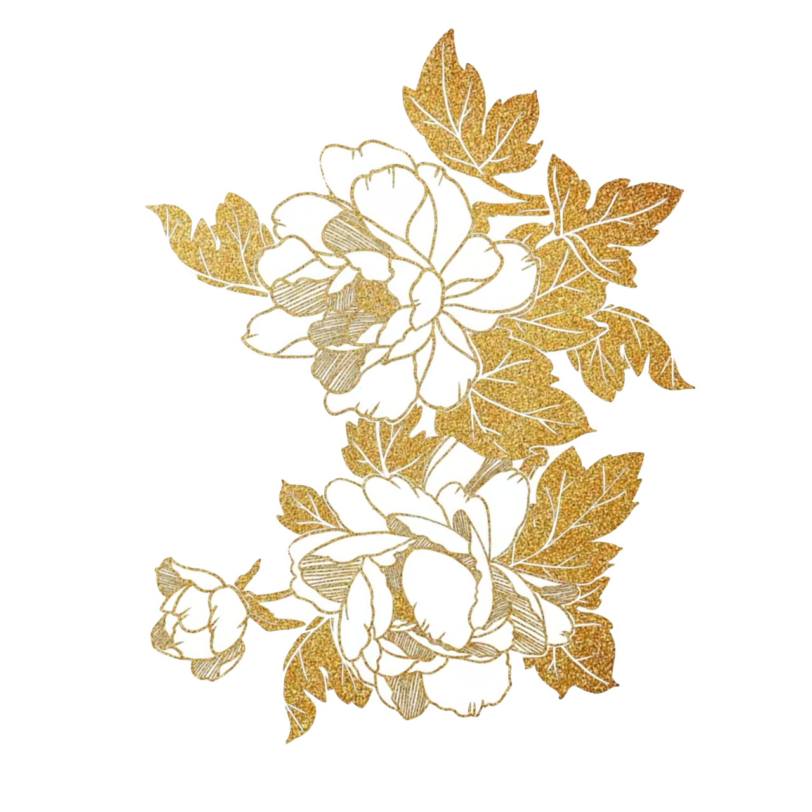

中国掐丝珐琅传承网
中国掐丝珐琅传承网
00
-
00
-
00
中国掐丝珐琅传承网
设计师设计胎图、丝工图纸、蓝图（点蓝的色稿），以备下一道工序应用。
先将紫铜片按照图纸要求剪出各种不同形状，并用铁锤敲打成各种形状的铜胎
用镊子将压扁了的细紫铜丝掐、掰成各种精美的图案花纹，再蘸上白芨粘附在铜胎上，然后筛上银焊药，经900度的高温焙烧，将铜丝花纹牢牢地焊接在铜胎上。
粘丝掐丝师傅用镊子夹着掐好的扁铜丝，蘸上白芨糊，按照预先设计的图案纹饰，粘附到铜胎上。由于白芨见火即化，还需要在粘满铜丝的铜胎上筛一层银焊药粉，放在火里经900多度的高温焙烧，铜丝就牢牢地粘在铜胎上了。
艺师把事先备好的珐琅釉料，依照图案所示的颜色，用由铜丝锤制成的小铲形工具，一铲铲地将珐琅釉料填充入焊好的铜丝纹饰框架中。
将整个胎体填满色釉后，再拿到炉温大约800℃的高炉中用一些矿物石头作燃料烘烧，色釉由砂粒状固体熔化为液体，待冷却后成为固着在胎体上的绚丽的色釉。此时色釉低于铜丝高度，所以得再填一次色釉，再经烧结，一般要连续填四次，直至将纹样内填到与掐丝纹相平。
使用砂石、黄石、木炭等材料，手工逐次打磨，将釉面、丝线、底线、口线刮平磨亮，景泰蓝部分晶莹光亮。
为避免铜胎氧化生锈，在作品的口沿、圈足和隔线及外露的铜丝纹样上镀金，使之长久如新，更显庄重堂皇。
 

大邑烧瓷轻且坚,
扣如哀玉锦城传。
--《又于韦处乞大邑瓷碗》唐·杜甫
景泰蓝工艺不仅运用了青铜工艺，又吸收了瓷器工艺、传统绘画和雕刻技艺。可以说，是集冶金、铸造、绘画、窑业、雕、錾、锤等多种工艺为一体的复合性工艺 过程，可谓集工艺之大成，因而有“一件景泰蓝，十箱官窑器”之说。
掐丝珐琅的图案设计精美复杂，通常以传统吉祥图案为主，如龙凤、花卉、云纹等，寓意美好。掐丝珐琅工艺勾勒出图案的轮廓，线条流畅及立体感强，填充的珐琅釉料进一步增强了图案的层次感和艺术效果。
了解更多